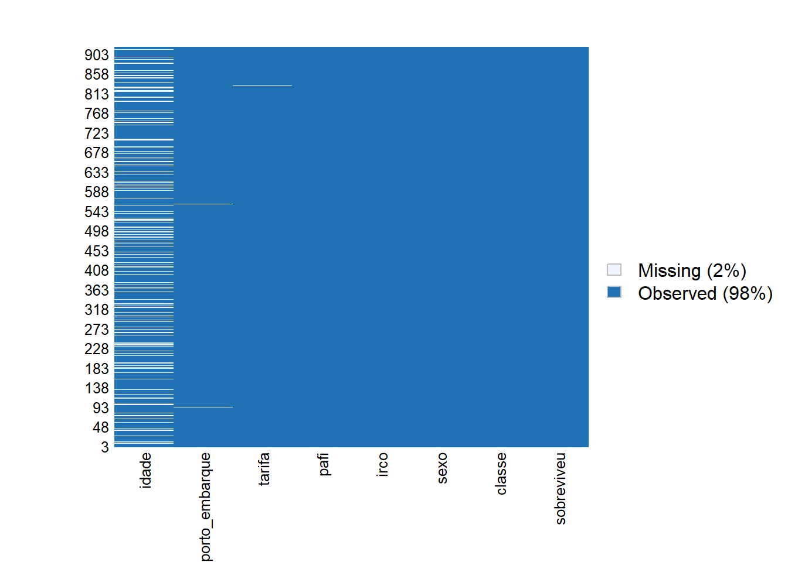
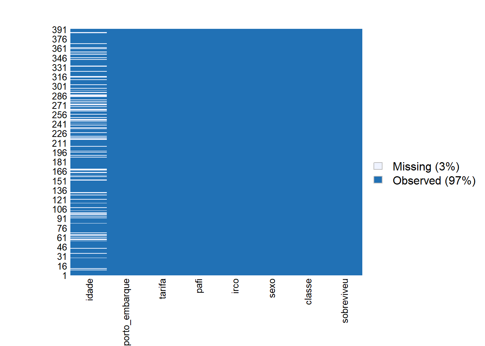
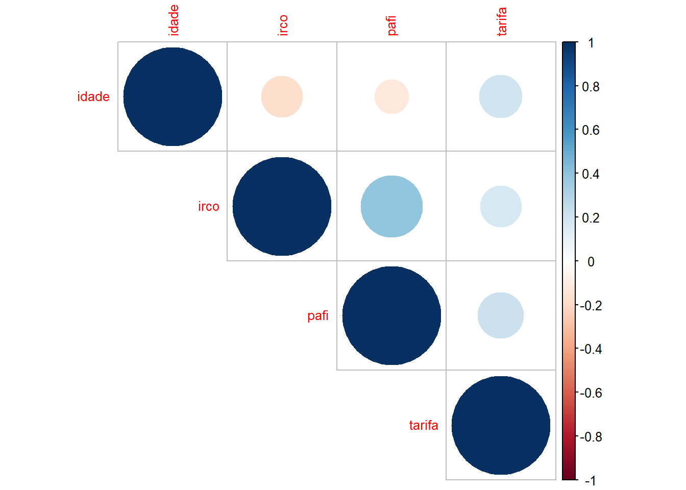
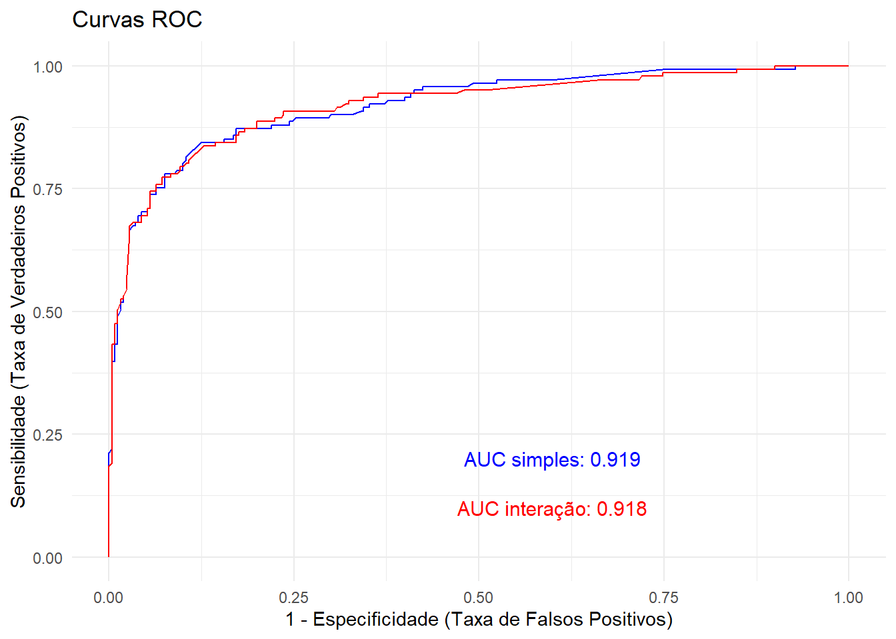
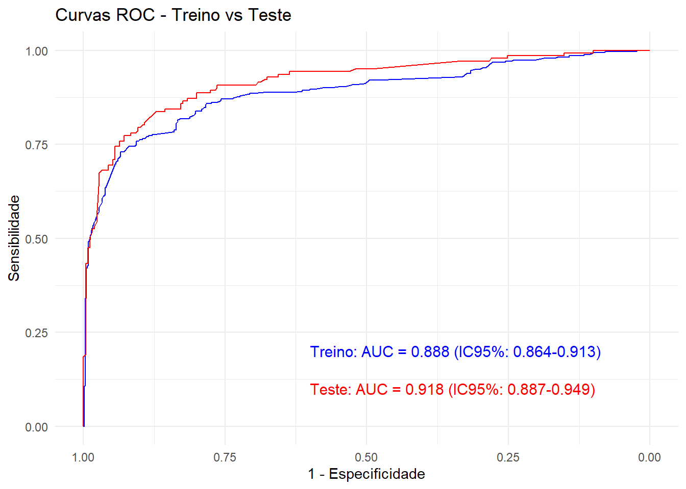

pacman::p_load(Amelia,
caret,
dplyr,
corrplot,
flextable,
ggplot2,
gtsummary,
knitr,
performance,
pROC,
quesrionr,
readxl,
sjPlot)24 Regressão Logística Binária
24.1 Pacotes necessários neste capítulo
24.2 Introduçao
Os dois tipos de regressão mais comuns são a regressão linear e a regressão logística. A regressão linear é utilizada quando a variável dependente é quantitativa e contínua, enquanto a regressão logística é utilizada quando a variável dependente é qualitativa (categórica).
A regressão logística binária é utilizada quando o objetivo é estimar a probabilidade de um indivíduo pertencer a uma das duas categorias possíveis (o desfecho binário, 0 ou 1), dada uma ou mais variáveis independentes ou preditoras (de qualquer tipo). A regressão logística binária é uma abordagem classificatória que estima a relação entre uma variável dependente dicotômica e um conjunto de preditores. Foi desenvolvida, em 1958, como um a extensão do modelo linear pelo estatístico britânico David Cox (Cox 1958). Pertence a uma família, denominada Modelo Linear Generalizado (GLM).
24.3 Função Logistica ou Função logit
A regressão linear simples (RLS) estima a relação entre uma variável dependente quantitativa contínua (Y) e uma variável explicativa contínua (X). Por exemplo, a relação entre o Comprimento (Y) e a Idade (X) de crianças é estimada pelo método dos Mínimos Quadrados Ordinários (MQO) e descrita pela equação da reta de regressão. Esta reta tenta predizer a variável resposta contínua a partir de uma variável preditora também contínua (Figura 24.1).
\[ y = \beta_{0} + \beta_{1} \times x \]

Limitação da RLS para Desfechos Binários
Agora, se o objetivo é estimar o impacto da idade de um paciente na probabilidade de ele ter ou não um determinado desfecho (por exemplo, uma doença). A idade é uma variável preditora contínua, mas o desfecho (doença) é uma variável categórica dicotômica, assumindo apenas os valores 0 (não) e 1 (sim) (Figura 24.2).

Se for ajustada uma reta de regressão aos pontos usando o método dos Mínimos Quadrados Ordinários, o gráfico (Figura 24.3) terá o seguinte aspecto: A reta de regressão se estende abaixo de 0 e acima de 1 em relação ao eixo Y.

No entanto, a variável Y (Probabilidade de Doença) não pode assumir valores fora do limite de 0 e 1. Além disso, a variável desfecho dicotômica viola os pressupostos de normalidade e homoscedasticidade dos erros, pois segue a Distribuição de Bernoulli. Em consequência, a regressão linear não é adequada nessa situação.
A Solução: A Função Logit
A solução é usar a regressão logística binária, que lida com essas limitações, usando uma função de ligação (link function) que transforma a probabilidade em um valor que pode ser modelado linearmente (e que pode variar de - a +. A função de ligação utilizada no modelo de regressão logística é a Logit (ou função logística), que resulta em uma curva em forma de ‘S’ chamada curva sigmoide (Figura 24.4):
\[ logit_i = \ln\left(\frac{p}{1-p}\right) \]

O termo \(\frac{p}{1-p}\) é a Razão de Chances (Odds Ratio), que representa a razão entre a probabilidade de ocorrência do evento (p) e a probabilidade de sua não ocorrência (\(1-p\)). O logit é o logaritmo natural dessa razão de chances. Na regressão logística, o logit é modelado como uma função linear dos preditores, permitindo a estimação dos coeficientes (\(\beta\)):
\[ logit_{i} = \ln\left(\frac{p}{1-p}\right) = \beta_{0} + \beta_{1}x_{1} + \dots + \beta_{n}x_{n} \]
Retornando à probabilidade p
Através de manipulação algébrica, podemos isolar p para obter a probabilidade do evento Y=1 (sucesso) diretamente, garantindo que o valor final sempre esteja entre 0 e 1:
\[ p = \frac{e^{\beta_{0} + \beta_{1}x_{1} + \dots + \beta_{n}x_{n}}}{1 + e^{\beta_{0} + \beta_{1}x_{1} + \dots + \beta_{n}x_{n}}} \]
24.4 Dados para o exemplo
Tragédia do Titanic
O RMS Titanic (Figura 24.5), considerado o navio inafundável de sua época, sofreu um trágico destino em sua viagem inaugural com destino a Nova Iorque. Construído com o intuito de ser o maior e mais luxuoso transatlântico, o Titanic colidiu com um iceberg na noite de 14 de abril de 1912, no Oceano Atlântico Norte, afundando rapidamente e causando a morte de inúmeras pessoas.

O Titanic partiu em sua primeira e única viagem com 1316 passageiros a bordo: 325 na primeira classe, 285 na segunda e 706 na terceira. Deles, 922 embarcaram em Southampton, 274 em Cherbourg-Octeville, na França, e 120 em Queenstown, na Irlanda. Além desses passageiros, havia 908 tripulantes, totalizando m 2224 pessoas. O número total de mortos mais aceito é 1514, quase 70% dos que embarcaram na viagem (Wikipédia 2025).
Os dados de 1309 passageiros estão em um arquivo denominado dadosTitanic.xlsx, obtido no pacote titanic, modificado estruturalmente e traduzido, sem alterar os dados, para chegar a este arquivo que pode ser baixado aqui. Possui 1309 observações e 12 variáveis:
• id \(\to\) identificação do passageiro
• sobreviveu \(\to\) 0 = não; 1 = sim
• classe \(\to\) classe do passageiro (categórica): 1 = 1ª classe; 2 = 2ª classe e 3 = 3ª classe (qualitativa)
• nome \(\to\) nome do passageiro (nominal)
• sexo \(\to\) masc = masculino; fem = feminino (binária)
• idade \(\to\) idade em anos (numérica contínua)
• irco \(\to\) número de irmãos/cônjuges a bordo (numérica discreta)
• pafi \(\to\) número de pais/filhos a bordo (numérica discreta)
• ticket \(\to\) número do bilhete de embarque (nominal)
• tarifa \(\to\) valor pago pela passagem em dólares (numérica contínua)
• cabine \(\to\) número de identificação da cabine (nominal)
• porto_embarque \(\to\) porto de embarque: C = Cherbourg, Q = Queenstown, S = Southampton
24.4.1 Leitura dos dados
Após fazer o download do banco de dados em seu diretório 1, carregue-o no RStudio, usando a função read_excel() do pacote readxl:
dadosTitanic <- readxl::read_excel("dados/dadosTitanic.xlsx")24.4.2 Explorando e preparando os dados
Para observar as variáveis do banco de dados, pode-se usar a função str():
str(dadosTitanic)tibble [1,309 × 12] (S3: tbl_df/tbl/data.frame)
$ id : num [1:1309] 1 2 3 4 5 6 7 8 9 10 ...
$ sobreviveu : num [1:1309] 0 1 1 1 0 0 0 0 1 1 ...
$ classe : num [1:1309] 3 1 3 1 3 3 1 3 3 2 ...
$ nome : chr [1:1309] "Braund, Mr. Owen Harris" "Cumings, Mrs. John Bradley (Florence Briggs Thayer)" "Heikkinen, Miss. Laina" "Futrelle, Mrs. Jacques Heath (Lily May Peel)" ...
$ sexo : chr [1:1309] "masc" "fem" "fem" "fem" ...
$ idade : num [1:1309] 22 38 26 35 35 NA 54 2 27 14 ...
$ irco : num [1:1309] 1 1 0 1 0 0 0 3 0 1 ...
$ pafi : num [1:1309] 0 0 0 0 0 0 0 1 2 0 ...
$ ticket : chr [1:1309] "A/5 21171" "PC 17599" "STON/O2. 3101282" "113803" ...
$ tarifa : num [1:1309] 7.25 71.28 7.92 53.1 8.05 ...
$ cabine : chr [1:1309] NA "C85" NA "C123" ...
$ porto_embarque: chr [1:1309] "S" "C" "S" "S" ...A saída exibe um tibble com 1309 linhas (casos = passageiros) e 12 colunas (variáveis).
24.4.2.1 Remoção de variáveis irrelevantes
Algumas dessas variáveis não terão utilidade para a análise de regressão logística: por exemplo, a coluna índice (id), o nome do passageiro, o número do ticket de embarque e o número da cabine. Elas serão removidas do banco de dados, usando a função select() do pacote dplyr (Seção 5.6):
dadosTitanic <- dplyr::select(dadosTitanic,
-c(id, nome, ticket, cabine))24.4.2.2 Conversão de variáveis para fatores
Algumas variáveis estão classificadas como numéricas (classe, sexo, porto_embarque e sobreviveu), mas são fatores. Esta modificação será realizada, usando a função mutate() do pacote dplyr:
library(dplyr)
dadosTitanic <- dadosTitanic %>%
mutate(sexo = factor(sexo)) %>%
mutate(classe = factor(classe)) %>%
mutate(porto_embarque = factor(porto_embarque)) %>%
mutate(sobreviveu = factor(sobreviveu))
str(dadosTitanic)tibble [1,309 × 8] (S3: tbl_df/tbl/data.frame)
$ sobreviveu : Factor w/ 2 levels "0","1": 1 2 2 2 1 1 1 1 2 2 ...
$ classe : Factor w/ 3 levels "1","2","3": 3 1 3 1 3 3 1 3 3 2 ...
$ sexo : Factor w/ 2 levels "fem","masc": 2 1 1 1 2 2 2 2 1 1 ...
$ idade : num [1:1309] 22 38 26 35 35 NA 54 2 27 14 ...
$ irco : num [1:1309] 1 1 0 1 0 0 0 3 0 1 ...
$ pafi : num [1:1309] 0 0 0 0 0 0 0 1 2 0 ...
$ tarifa : num [1:1309] 7.25 71.28 7.92 53.1 8.05 ...
$ porto_embarque: Factor w/ 3 levels "C","Q","S": 3 1 3 3 3 2 3 3 3 1 ...24.4.2.3 Divisão dos dados em Treino e Teste
A divisão dos dados em conjuntos de treino e teste é uma prática frequente em aprendizado de regressão logística. Serve para avaliar a performance de um modelo de forma imparcial precisa. O conjunto treino é a parte dos dados que o modelo utiliza para aprender as relações entre as variáveis independentes e a variável dependente. O modelo analisa esses dados para encontrar os melhores coeficientes que descrevem a relação entre as variáveis. O conjunto teste é a parte dos dados que o modelo não analisou durante o treinamento. Ele é utilizado para avaliar a capacidade do modelo de fazer previsões em novos dados. Ao comparar as previsões do modelo com os valores reais no conjunto teste, pode-se medir a sua precisão e generalização. Essa técnica é utilizada para evitar o excesso de ajuste dos dadosconhecido como overfitting (Subramanian e Simon 2013), estimar a acurácia do modelo e comparação de modelos. A divisão mais comum é 70% para treinamento e 30% para teste, mas essa proporção pode variar dependendo do tamanho do conjunto de dados e da complexidade do problema.
# Definindo a semente para reprodutibilidade (essencial)
set.seed(123)
# Embaralhando os dados
dados_embaralhados <- dadosTitanic[sample(nrow(dadosTitanic)),]
# Dividindo os dados em treino e teste
library(caret)
trainIndex <- createDataPartition(dados_embaralhados$classe, p = 0.7, list = FALSE)
treino <- dados_embaralhados[trainIndex, ]
teste <- dados_embaralhados[-trainIndex, ]
# Observar o tamanho das amostras
dim(treino)[1] 918 8dim(teste)[1] 391 824.4.2.4 Verificação e tratamento dos dados faltantes
O próximo passo é investigar dados faltantes (NA) ou valores vazios2 em cada conjunto separadamente. Isso garante que o tratamento seja feito corretamente sem contaminar o teste.
Para verificar os dados faltantes e espaços vazios (strings ““) no banco de dados, pode-se usar o comando que soma os dados faltantes e espaços vazios em cada coluna do banco de dados:
Verificar valores faltantes
# Contagem de valores faltantes por variável
colSums(is.na(treino)) sobreviveu classe sexo idade irco
0 0 0 175 0
pafi tarifa porto_embarque
0 1 2 colSums(is.na(teste)) sobreviveu classe sexo idade irco
0 0 0 88 0
pafi tarifa porto_embarque
0 0 0 Verificar valores vazios (strings ““)
colSums(treino == "") sobreviveu classe sexo idade irco
0 0 0 NA 0
pafi tarifa porto_embarque
0 NA NA colSums(teste == "") sobreviveu classe sexo idade irco
0 0 0 NA 0
pafi tarifa porto_embarque
0 0 0 No subconjunto treino, existem 175 NAs na variável idade, um NA na variável tarifa e dois na variável porto_embarque; no subconjunto teste, têm 88 NAs na variável idade. Não existem espaços vazios em nenhum dos subconjuntos.
Uma visualização rápida (Figura 24.6, Figura 24.7) pode ser feita com a função missmap() do pacote Amelia:
library(Amelia)
missmap(treino, main = "")

library(Amelia)
missmap(teste, main = "")

Tratamento dos dados faltantes
A melhor forma de tratar dados faltantes depende de diversos fatores (Prabhakaran 2016), como:
- Mecanismo de geração dos dados faltantes: Por que os dados estão faltando? É aleatório, relacionado a outras variáveis ou a alguma característica da população?
- Quantidade de dados faltantes: 263 valores faltantes representam uma proporção considerável dos dados (20%).
- Impacto na análise: Como a presença de dados faltantes pode afetar os resultados da sua análise?
O que fazer?
- Exclusão de casos:
- Listwise deletion: Remover todas as observações com algum dado faltante. Não recomendado neste caso, pois você perderia uma quantidade significativa de dados.
- Pairwise deletion: Utilizar todas as observações disponíveis para cada análise. Pode gerar resultados inconsistentes.
- Imputação:
- Imputação por média, mediana ou moda: Substituir os valores faltantes pela média, mediana ou moda da variável. Simples, mas pode subestimar a variância.
- Imputação por regressão: Utilizar um modelo de regressão para prever os valores faltantes com base em outras variáveis. Mais preciso, mas pode ser enviesado se o modelo não for adequado.
- Imputação múltipla: Criar múltiplos conjuntos de dados, cada um com diferentes valores imputados, e combinar os resultados das análises. Método mais robusto e permite estimar a incerteza.
- Imputação por K-Nearest Neighbors: Substituir os valores faltantes pela média dos k vizinhos mais próximos. Útil para dados numéricos e pode capturar padrões locais.
Inicialmente, será removido os valores omissos nas variáveis tarifa e porto_embarque, no subconjunto treino:
treino <- treino[-which(is.na(treino$tarifa)),]
treino <- treino[-which(is.na(treino$porto_embarque)),]Dessa forma, permanecem os valores faltantes na variáveis idade em ambos subconjuntos. Será feita a imputação, usando a mediana por ser uma estratégia simples.
treino$idade[is.na(treino$idade)] <- median(treino$idade, na.rm=TRUE)
teste$idade[is.na(teste$idade)] <- median(teste$idade, na.rm=TRUE)Novamente, se usarão as funções colSums(is.na()) e str()para pesquisar se existem dados faltantes:
# Contagem de valores faltantes por variável
colSums(is.na(treino)) sobreviveu classe sexo idade irco
0 0 0 0 0
pafi tarifa porto_embarque
0 0 0 colSums(is.na(teste)) sobreviveu classe sexo idade irco
0 0 0 0 0
pafi tarifa porto_embarque
0 0 0 Os dados (treino e teste) não apresentam mais dados faltantes e estão pronts para serem usados na análise.
Importante
Após o tratamento dos dados, tem-se dois conjuntos de dados que servirão para:
- Treino - que será usado para realizar a regressão logística. Corresponde a aproximadamente 70% dos dados originais.
- Teste - que será usado para avaliar a performance do modelo e a sua capacidade de predição.
- Variável dependente ou resposta:
sobreviveu
- Variáveis explicativas ou preditoras: as demais variáveis
- O objetivo da análise é gerar um modelo de regressão logística capaz de predizer qual a probabilidade de um passageiro com determinasdas características sobreviver ao naugráfio do Titanic, ocorrido em 14 de abril de 1912
24.5 Construção do modelo de Regressão Logística
Antes de criar o modelo, alguns passos são importantes:
- Verificar se existe correlação entre as variáveis numéricas, para evitar problemas de multicolinearidade, pois se as variáveis forem altamente correlacionadas pode causar:
Coeficientes instáveis (pequenas mudanças nos dados podem gerar grandes variações nos coeficientes estimados);
Torna difícil o entendimento o efeito individual de cada variável sobre a probabilidade do desfecho;
Redução da precisão estatística, pois aumentam os erros padrão dos coeficientes, podendo tornar variáveis significativas aparaentemente insignificantes.
Para isso, deve-se avaliar a correlação de Pearson entre as variáveis numéricas. Valores acima de 0,8 ou abaixo de -0,8 são preocupantes.
# Selecionar apenas as variáveis numéricas
dados_numericos <- treino[c("idade", "irco", "pafi", "tarifa")]
# Calcula a matriz de correlação de Pearson
matriz_cor <- cor(dados_numericos, use = "all.obs", method = "pearson")
# Exibe a matriz
print(matriz_cor) idade irco pafi tarifa
idade 1.0000000 -0.1745660 -0.1218267 0.1914591
irco -0.1745660 1.0000000 0.3914691 0.1755954
pafi -0.1218267 0.3914691 1.0000000 0.2194998
tarifa 0.1914591 0.1755954 0.2194998 1.0000000É possível visualizar essa matriz com a função corrplot(Figura 24.8)
library(corrplot)
# Visualiza a matriz de correlação
corrplot(matriz_cor, method = "circle", type = "upper", tl.cex = 0.8)

- Verificar se há observações incompletas, apesar de todo tratamento dos dados faltantes ou vazios:
# Se todas informações forem completas, retorna FALSE
any(!complete.cases(treino))[1] FALSE- Verificar se existe um desbalanceamento preocupante, ou seja, quando uma das classes do desfecho reperesenta menos de 10% dos casos (desfecho raro), pois pode comprometer a preformance e a interpretação do modelo, reduzindo a capacidade preditiva.
tab <- table(treino$sobreviveu)
tab
0 1
575 340 prop.table(tab)
0 1
0.6284153 0.3715847 24.5.1 Modelos de Regressão Logística
24.5.1.1 Modelo 1 - modelo completo
O modelo 1 (mod1) será construído com o subconjunto treino, usando a função nativa glm() – generalized linear model - usada para aplicar uma regressão logística no R. Sua funcionalidade é idêntica à função lm() da regressão linear. Necessita alguns argumentos:
formula \(\to\) objeto da classe formula. Um preditor típico tem o formato
resposta ~ preditorem queresposta, na regressão logística binária, é uma variável dicotômica e opreditorpode ser uma série de variáveis numéricas ou categóricas;family \(\to\) uma descrição da distribuição de erro e função de link a ser usada no modelo
glm, pode ser uma string que nomeia uma função de family. O padrão éfamily = gaussian(). No caso da regressão logística binária,family = binomial()oufamily = binomial (link =”logit”). Para outras informações, usehelp(glm)ouhelp(family);data \(\to\) banco de dados.
Dentro dos parênteses da função glm(), são fornecidas informações essenciais sobre o modelo. À esquerda do til (~), encontra-se a variável dependente, que deve estar codificada como 0 e 1 para que a função a interprete corretamente como binária. Após o til, são listadas as variáveis preditoras. Quando se utiliza um ponto (~.), isso indica a inclusão de todas as variáveis preditoras disponíveis. Já o uso do asterisco (*) entre duas variáveis preditoras especifica que, além dos efeitos principais, também deve ser considerado um termo de interação entre elas. No exemplo apresentado, nesta análise inicial, não será solicitada os efeitos da interação. Por fim, após a vírgula, define-se que a distribuição utilizada é a binomial. Como a função glm usa logit como link padrão para uma variável de desfecho binomial, não há necessidade de especificá-lo explicitamente no modelo.
O modelo inicial de regressão logística do tipo entrada forçada (enter), método padrão de conduzir uma regressão, que consiste em simplesmente colocar todos os preditores no modelo de regressão em um bloco (modelo completo) e estimar parâmetros para cada um (Field, Miles, e Field 2012). O dataframe treino será usado com todos os preditores dentro da função. O objeto criado será denominado de mod1.
mod1 <- glm(sobreviveu ~.,
data = treino,
family = binomial(link = "logit"))A saída da função glm() fornece os coeficientes, da mesma forma como na regressão linear, que estima o efeito das variáveis preditoras sobre a chance de ocorrência do desfecho (no exemplo, sucesso = 1).
Interpretação Coeficientes
Os coeficientes podem ser interpretados da seguinte maneira (Anderson 2023):
Coeficiente positivo (\(\beta \gt 0\)) : Aumenta o log das chances do evento ocorrer. Ou seja, aumenta a probabilidade de desfecho = 1, mantendo as outras variáveis constantes.
Coeficiente negativo (\(\beta \lt 0\)) : Diminui o log das chances do evento ocorrer. Ou seja, reduz a probabilidade de desfecho = 1, mantendo as outras variáveis constantes.
Coeficiente zero (\(\beta = 0\)) : A variável não tem efeito sobre o desfecho.
Interpretação das outras métricas
O Null deviance representa o quão bem a variável resposta é prevista por um modelo que inclui apenas o intercepto e não as variáveis independentes. Representa o erro do modelo sem preditores. Seria como dizer: “Qual o erro se eu apenas chutar a média geral?”;
O Residual deviance mostra quão bem a variável de resposta é prevista por um modelo que inclui todas as variáveis. Representa o erro do modelo com preditores. Quanto menor o Residual Deviance em relação ao Null Deviance, melhor o modelo ajusta os dados. No mod1, o Residual Deviance é igual a 708.95, bem menor que o Null Deviance (1207.42), ou seja, o modelo está explicando bem os dados. A diferença entre os dois (1207.42 − 708.95 = 498.47) indica o ganho de ajuste ao incluir as variáveis. Quanto maior essa redução, melhor o modelo. Podemos testar essa diferença com um teste qui-quadrado para verificar se a melhora é estatisticamente significativa:
anova(mod1, test="Chisq")Analysis of Deviance Table
Model: binomial, link: logit
Response: sobreviveu
Terms added sequentially (first to last)
Df Deviance Resid. Df Resid. Dev Pr(>Chi)
NULL 914 1207.42
classe 2 71.16 912 1136.26 3.527e-16 ***
sexo 1 395.18 911 741.08 < 2.2e-16 ***
idade 1 12.34 910 728.74 0.0004435 ***
irco 1 13.68 909 715.07 0.0002172 ***
pafi 1 2.96 908 712.11 0.0853955 .
tarifa 1 1.84 907 710.27 0.1754262
porto_embarque 2 1.32 905 708.95 0.5161721
---
Signif. codes: 0 '***' 0.001 '**' 0.01 '*' 0.05 '.' 0.1 ' ' 1O teste estatístico compara o Null Deviance (modelo com apenas o intercepto) com a Residual Deviance (modelo com preditores), usando o teste qui-quadrado para verificar se a inclusão das variáveis melhora significativamente o ajuste. Se o valor p for menor que 0.05, pode-se concluir que o modelo com preditores é significativamente melhor que o modelo nulo até a inclusão da variável irco. A partir daí a inclusão de novas variáveis não melhora estatisticamente o modelo.
O AIC (Akaike Information Criterion) é uma medida estatística de ajuste que penaliza o modelo logístico pelo número de variáveis preditivas. Um modelo com valor mínimo de AIC é considerado um modelo bem ajustado. Um AIC = 728.95 isolado é difícil de interpretar, pois é útil para comparar modelos, quanto menor, melhor. Útil quando se testa diferentes combinações de variáveis.
Para ver todo o resultado do modelo, executa-se a função summary():
summary(mod1)
Call:
glm(formula = sobreviveu ~ ., family = binomial(link = "logit"),
data = treino)
Coefficients:
Estimate Std. Error z value Pr(>|z|)
(Intercept) 3.810669 0.482866 7.892 2.98e-15 ***
classe2 -0.784488 0.317787 -2.469 0.01356 *
classe3 -1.842339 0.316591 -5.819 5.91e-09 ***
sexomasc -3.483054 0.216705 -16.073 < 2e-16 ***
idade -0.032623 0.008303 -3.929 8.52e-05 ***
irco -0.327286 0.117324 -2.790 0.00528 **
pafi -0.200766 0.113950 -1.762 0.07809 .
tarifa 0.002822 0.002310 1.222 0.22176
porto_embarqueQ 0.265542 0.409950 0.648 0.51715
porto_embarqueS -0.125789 0.255076 -0.493 0.62191
---
Signif. codes: 0 '***' 0.001 '**' 0.01 '*' 0.05 '.' 0.1 ' ' 1
(Dispersion parameter for binomial family taken to be 1)
Null deviance: 1207.42 on 914 degrees of freedom
Residual deviance: 708.95 on 905 degrees of freedom
AIC: 728.95
Number of Fisher Scoring iterations: 5Uso do Odds Ratio (OR) na interpretação dos coeficientes
Numericamente, os coeficientes de regressão logística não são facilmente interpretáveis em escala bruta, pois estão representados como log (odds) ou logit . Para tornar mais simples, inverte-se a transformação logística, exponenciando os coeficientes (exp(coeficiente)). Isso faz com que os coeficientes se transformem em razões de chance (odds ratio), ficando mais intuitivos facilitando a interpretação. Isso pode ser realizado pela função odds.ratio() do pacote questionr (Barnier, Briatte, e Larmarange 2025), que retorna as OR e seus intervalos de confiança de 95%, além dos respectivos valores p:
library(questionr)
odds.ratio(mod1) OR 2.5 % 97.5 % p
(Intercept) 45.180634 17.845512 118.7689 2.979e-15 ***
classe2 0.456353 0.244196 0.8507 0.013564 *
classe3 0.158446 0.084837 0.2944 5.909e-09 ***
sexomasc 0.030713 0.019839 0.0464 < 2.2e-16 ***
idade 0.967903 0.952070 0.9836 8.521e-05 ***
irco 0.720878 0.564399 0.8952 0.005277 **
pafi 0.818104 0.648255 1.0181 0.078091 .
tarifa 1.002826 0.998331 1.0077 0.221764
porto_embarqueQ 1.304138 0.582937 2.9124 0.517151
porto_embarqueS 0.881801 0.536235 1.4594 0.621912
---
Signif. codes: 0 '***' 0.001 '**' 0.01 '*' 0.05 '.' 0.1 ' ' 1Quando o OR é menor que 1, significa que o evento (no exemplo: sobrevivência) é menos provável no grupo em questão comparado ao grupo de referência. Para interpretar em termos percentuais:
\[ \text{Redução percentual} = \left(1 - OR \right) \times 100 \]
Ou seja, considerando os passageiros da 2ª classe, tem-se que \(1 - 0.46 = 0.54 \times 100 = 54\)%. Assim, os passageiros da 2ª classe tem 54% menos chance de sobreviver que os da 1ª classe (nível de referência ); o da 3ª classe tem 84% menos chance de sobreviver que os da 1ª classe. Para saber o nível de referência, basta usar a função levels() da seguinte maneira:
levels(treino$classe)[1] "1" "2" "3"Quando o OR é maior que 1, o evento é mais provável no grupo em questão. A interpretação muda:
\[ \text{Aumento percentual} = \left(OR - 1 \right) \times 100 \]
Considerando a variável preditora tarifa, cujo OR = 1.003, tem-se \(1.003 - 1 = 0.003 \times 100 = 0.3\). Ou seja, um aumento de 0,3% na sobrevivência. Um valor muito pequeno que se mostrou sem significância estatística (p = 0.2218).
Os homens têm \(1 - 0.03 = 0.97 \times 100 = 97\)% menos chance de sobreviver do que as mulheres.
Qual a chance das mulheres sobreviverem em relação aos homens?
Para responder essa pergunta, basta inverter a OR. Assim, as mulheres têm \(1/0.03 \approx\) 33 vezes mais chance de sobreviver que os homens.
A idade (variável numérica) mostra que o aumento da idade diminuiu a sobrevivência; para cada ano a mais de idade a chance de sobrevivência reduz em \(1 - 0.97 = 0.03 \times 100 = 3\)%. Ter irmãos/cônjuges (variável irco) a bordo reduz a chance de sobrevivência em \(1 - 0.72 = 0.28 \times 100 = 28\)%. As demais variáveis não tiveram um efeito significativo.
24.5.1.2 Modelo 2 - modelo simples
No ajuste realizado no modelo 1, apenas as variáveis classe, sexo, idade e irco foram significativas. Neste novo modelo (mod2), essas variáveis permanecem e as não significativas são removidas.
mod2 <- glm(sobreviveu ~ classe + sexo + idade + irco,
data = treino, family = binomial(link = "logit"))
summary(mod2)
Call:
glm(formula = sobreviveu ~ classe + sexo + idade + irco, family = binomial(link = "logit"),
data = treino)
Coefficients:
Estimate Std. Error z value Pr(>|z|)
(Intercept) 3.866786 0.415034 9.317 < 2e-16 ***
classe2 -0.980705 0.278733 -3.518 0.000434 ***
classe3 -2.021346 0.259335 -7.794 6.47e-15 ***
sexomasc -3.436506 0.207677 -16.547 < 2e-16 ***
idade -0.032155 0.008241 -3.902 9.55e-05 ***
irco -0.374735 0.113269 -3.308 0.000938 ***
---
Signif. codes: 0 '***' 0.001 '**' 0.01 '*' 0.05 '.' 0.1 ' ' 1
(Dispersion parameter for binomial family taken to be 1)
Null deviance: 1207.42 on 914 degrees of freedom
Residual deviance: 715.07 on 909 degrees of freedom
AIC: 727.07
Number of Fisher Scoring iterations: 5A saída do summary() mostra que os coeficientes permaneceram apresentando significância estatística.
Razão de Chances do modelo 2
Usando a mesma função, usada para o mod1, calcula-se as OR para o mod2:
library(questionr)
odds.ratio(mod2) OR 2.5 % 97.5 % p
(Intercept) 47.788557 21.606965 110.1338 < 2.2e-16 ***
classe2 0.375046 0.215871 0.6447 0.0004341 ***
classe3 0.132477 0.078973 0.2186 6.474e-15 ***
sexomasc 0.032177 0.021173 0.0478 < 2.2e-16 ***
idade 0.968357 0.952626 0.9839 9.551e-05 ***
irco 0.687472 0.542726 0.8465 0.0009384 ***
---
Signif. codes: 0 '***' 0.001 '**' 0.01 '*' 0.05 '.' 0.1 ' ' 1Os passageiros da 2ª classe, tem, agora, \(1 - 0.38 = 0.62 \times 100 = 62\)% menos chance de sobreviver que os da 1ª classe (nível de referência); o da 3ª classe tem 87% menos chance de sobreviver que os da 1ª classe. Esses valores e os restantes não diferem muito dos do mod1.
Como o AIC do mod2(727.07) é menor que o do mod1(728.95) é possível dizer que houve uma melhora no ajuste, apesar de a diferença ser muito pequena.
Entretanto, outros modelos são possíveis.
24.5.1.3 Modelo 3
A partir do modelo completo (mod1), será criado um terceiro modelo, selecionando as variáveis automaticamente, usando a função step(). Usando o argumento direction = "backward", a função realiza a eliminação regressiva — ou seja, começa com o modelo completo e vai retirando variáveis uma a uma. Avalia o impacto de remover cada variável individualmente. Remove a variável cuja retirada melhora o critério de ajuste (em geral, AIC) e vai repetindo o processo até que nenhuma remoção adicional melhore o modelo. Considerando ajuste e simplicidade , quanto menor o AIC, melhor o modelo.
mod3 <- step(mod1, direction = "backward") Start: AIC=728.95
sobreviveu ~ classe + sexo + idade + irco + pafi + tarifa + porto_embarque
Df Deviance AIC
- porto_embarque 2 710.27 726.27
- tarifa 1 710.48 728.48
<none> 708.95 728.95
- pafi 1 712.18 730.18
- irco 1 718.20 736.20
- idade 1 724.99 742.99
- classe 2 747.91 763.91
- sexo 1 1078.51 1096.51
Step: AIC=726.27
sobreviveu ~ classe + sexo + idade + irco + pafi + tarifa
Df Deviance AIC
- tarifa 1 712.11 726.11
<none> 710.27 726.27
- pafi 1 714.11 728.11
- irco 1 720.40 734.40
- idade 1 725.91 739.91
- classe 2 749.18 761.18
- sexo 1 1093.47 1107.47
Step: AIC=726.11
sobreviveu ~ classe + sexo + idade + irco + pafi
Df Deviance AIC
<none> 712.11 726.11
- pafi 1 715.07 727.07
- irco 1 721.21 733.21
- idade 1 728.02 740.02
- classe 2 779.41 789.41
- sexo 1 1098.56 1110.56summary(mod3)
Call:
glm(formula = sobreviveu ~ classe + sexo + idade + irco + pafi,
family = binomial(link = "logit"), data = treino)
Coefficients:
Estimate Std. Error z value Pr(>|z|)
(Intercept) 3.979416 0.423047 9.407 < 2e-16 ***
classe2 -0.987641 0.279600 -3.532 0.000412 ***
classe3 -2.013771 0.259956 -7.747 9.44e-15 ***
sexomasc -3.519814 0.215357 -16.344 < 2e-16 ***
idade -0.032431 0.008297 -3.909 9.28e-05 ***
irco -0.321086 0.116010 -2.768 0.005645 **
pafi -0.186557 0.110554 -1.687 0.091512 .
---
Signif. codes: 0 '***' 0.001 '**' 0.01 '*' 0.05 '.' 0.1 ' ' 1
(Dispersion parameter for binomial family taken to be 1)
Null deviance: 1207.42 on 914 degrees of freedom
Residual deviance: 712.11 on 908 degrees of freedom
AIC: 726.11
Number of Fisher Scoring iterations: 5Este terceiro modelo chega a um AIC = AIC: 726.11, melhor que os anteriores e incluindo a variável pafi.
24.6 Seleção do Modelo
Existem várias maneiras de verificar qual o modelo apresenta um melhor ajuste.
24.6.1 Deviance
O Deviance mede o quão bem o modelo se ajusta aos dados observados. Ele é baseado na log-verossimilhança (log-likelihood -LL) e funciona como uma medida de erro:
• Deviance nulo: Representa o erro do modelo sem preditores, apenas com intercepto.
\[ D_{null} = 2 \times \left(LL_{\text{modelo saturado}} - LL_{\text{modelo nulo}}\right) \]
Onde o modelo saturado é um modelo teórico que se ajusta perfeitamente os dados - a log-verossimilhança é máxima possível e o modelo nulo é o modelo que só usa a média da resposta (sem preditores) e serve como base de comparação.
• Deviance residual: Representa o erro do modelo com preditores.
\[ D_{residual} = 2 \times \left(LL_{\text{modelo saturado}} - LL_{\text{modelo proposto}}\right) \]
Se a null deviance é pequena, o modelo nulo já explica bem os dados; Se a deviance residual é muito menor que a null deviance, o modelo proposto melhora o ajuste. A diferença entre elas pode ser testada com um teste qui-quadrado.
Como os modelos são aninhados (um é uma versão mais simples do outro), pode-se compará-los, usando a função anova(). Assumindo que o \(mod2 \subset mod3 \subset mod1\), ou seja, mod2 tem menos preditores que mod3, que tem menos que mod1. A hipótese nula deste teste é que os modelos são equivalentes.
anova(mod2, mod3, mod1, test="Chisq")Analysis of Deviance Table
Model 1: sobreviveu ~ classe + sexo + idade + irco
Model 2: sobreviveu ~ classe + sexo + idade + irco + pafi
Model 3: sobreviveu ~ classe + sexo + idade + irco + pafi + tarifa + porto_embarque
Resid. Df Resid. Dev Df Deviance Pr(>Chi)
1 909 715.07
2 908 712.11 1 2.9591 0.0854 .
3 905 708.95 3 3.1586 0.3678
---
Signif. codes: 0 '***' 0.001 '**' 0.01 '*' 0.05 '.' 0.1 ' ' 1O argumento poderia ser test ="LRT". Ambos testes calculam a diferença entre as deviances dos modelos e comparam essa diferença com uma distribuição qui-quadrado para obter o valor p.
A Tabela de Deviance mostra a inclusão das variável pafi no mod3, melhora o modelo, mas não de forma estatisticamente significativa ao nível de 5% (p > 0.05), embora seja marginalmente significativa ao nível de 10% (p < 0.10).
A inclusão de Parch e Fare no mod1 não melhora significativamente o modelo (p > 0.05).
Concluindo: Os modelos têm, a grosso modo, Deviances muito próximos e a diferença não é significativa (valor p > 0,05 no teste de razão de verossimilhança), e pode-se aceitar que eles têm desempenho equivalente. Entretanto, o mod2 (model 1 na tabela de Deviance) é o mais simples, mais parcimonioso. Portanto, seria o mais adequado para seguir a análise.
Pode-se, também, usar um critério empírico que compara o Deviance residual com os graus de liberdade:
\[ \frac{D_{residual}}{n-k} \]
Onde n = número de observações e k = número de parâmetros, incluindo o intercepto.
Considerando o mod2, temos 4 variáveis explicativas (classe + sexo + idade + irco), mas cada uma pode gerar mais um parâmetro, dependendo da codificação (por ex.: classe com 3 níveis \(\to\) 2 parâmetros; sexo com dois níveis \(\to\) 1 parâmetro). Além disso, o modelo inclui um intercepto, então o total de parametros k é:
classe: 2 parâmetros (niveis 2 e 3)
sexo: 1 parâmetro (masculino)
idade: 1 parâmetro (numérica)
irco: 1 parâmetro (numérica)
Intercepto: 1
\[ \frac{715.07}{889-6} = \frac{790.88}{883} \approx 0.810 \]
Esse valor \(<1\) indica que o modelo está ajustado de forma adequada — ou seja, o erro médio por grau de liberdade é baixo. Os outros modelos também têm valoes \(<1\). Como visto anteriormente, eles não são muito diferentes em relação ao ajuste.
24.6.2 AIC (Akaike Information Criterion)
O AIC é uma medida estatística de ajuste que penaliza o modelo logístico pelo número de variáveis preditivas. Um modelo com valor mínimo de AIC é considerado um modelo bem ajustado. Desta forma o AIC serve para comparar modelos;
AIC(mod1)[1] 728.9485AIC(mod2)[1] 727.0662AIC(mod3)[1] 726.1071Existe uma melhora do AIC do mod1 para o mod2 e deste para o mod3. O teste estatístico (anova) mostrou que estatisticamente os modelos podem ser considerados equivalentes.
Assim, até aqui, baseado no princípio da simplicidade com eficácia (parcimônia), segue-se com o mod2. Entretanto, em um modelo mais complexo existe a possibilidade de interação entre variáveis.
24.6.3 Modelo 4: Interação
Uma interação ocorre quando a relação entre as variáveis preditora e desfecho depende do valor ou do nível assumido por outra variável preditora.
No exemplo em estudo, poderia haver uma interação se, por exemplo, a relação entre classe do passageiro e sobrevivência ao naufrágio dependesse do sexo. Ou seja, passageiros de uma mesma classe no navio podem ter diferentes probabilidades de sobrevivência se forem de sexos diferentes. Diante dessa possibilidade, será ajustado um novo modelo (mod4), incluindo a interação classe * sexo.
mod4 <- glm(
sobreviveu ~ classe * sexo + idade + irco,
data = treino,
family = binomial(link = "logit"))
summary(mod4)
Call:
glm(formula = sobreviveu ~ classe * sexo + idade + irco, family = binomial(link = "logit"),
data = treino)
Coefficients:
Estimate Std. Error z value Pr(>|z|)
(Intercept) 5.600274 0.827754 6.766 1.33e-11 ***
classe2 -1.542878 0.860253 -1.794 0.072890 .
classe3 -4.054871 0.757701 -5.352 8.72e-08 ***
sexomasc -5.255350 0.754549 -6.965 3.29e-12 ***
idade -0.037505 0.009137 -4.105 4.05e-05 ***
irco -0.374646 0.116956 -3.203 0.001359 **
classe2:sexomasc 0.246207 0.935090 0.263 0.792322
classe3:sexomasc 2.717634 0.791466 3.434 0.000595 ***
---
Signif. codes: 0 '***' 0.001 '**' 0.01 '*' 0.05 '.' 0.1 ' ' 1
(Dispersion parameter for binomial family taken to be 1)
Null deviance: 1207.42 on 914 degrees of freedom
Residual deviance: 683.37 on 907 degrees of freedom
AIC: 699.37
Number of Fisher Scoring iterations: 6Comparando esse novo modelo com o modelo 2 (mod2):
AIC(mod2, mod4) df AIC
mod2 6 727.0662
mod4 8 699.3672anova(mod2, mod4, test="Chisq")Analysis of Deviance Table
Model 1: sobreviveu ~ classe + sexo + idade + irco
Model 2: sobreviveu ~ classe * sexo + idade + irco
Resid. Df Resid. Dev Df Deviance Pr(>Chi)
1 909 715.07
2 907 683.37 2 31.699 1.308e-07 ***
---
Signif. codes: 0 '***' 0.001 '**' 0.01 '*' 0.05 '.' 0.1 ' ' 1conclui-se que houve uma melhora significativa mod2 quando se inclui a interação.
Interpretação das OR do modelo de interação
Como foi visto anteriormente, o cálculo das Odds Ratios (OR) e seus respectivos Intervalos de Confiança (IC95%) é fundamental para interpretar o efeito de cada preditor.
library(questionr)
odds.ratio(mod4) OR 2.5 % 97.5 % p
(Intercept) 2.7050e+02 6.5093e+01 1908.7073 1.327e-11 ***
classe2 2.1376e-01 2.9620e-02 1.0416 0.0728904 .
classe3 1.7338e-02 2.7062e-03 0.0613 8.721e-08 ***
sexomasc 5.2195e-03 8.1811e-04 0.0183 3.287e-12 ***
idade 9.6319e-01 9.4576e-01 0.9803 4.050e-05 ***
irco 6.8753e-01 5.3719e-01 0.8499 0.0013586 **
classe2:sexomasc 1.2792e+00 2.2264e-01 10.2411 0.7923217
classe3:sexomasc 1.5144e+01 3.9122e+00 101.1695 0.0005955 ***
---
Signif. codes: 0 '***' 0.001 '**' 0.01 '*' 0.05 '.' 0.1 ' ' 1Interpretação dos Efeitos Singulares (Significativos):
- Idade: OR = 0.963. Para cada aumento de um ano na idade, as chances de sobrevivência são 0.963 vezes menores (ou reduzem cerca de 3.7%), mantendo todas as outras variáveis constantes.
- classe3 (vs. classe1, para Mulheres): OR = 0.0173. Para uma mulher na 3ª Classe, as chances de sobrevivência são 98% menores do que para uma mulher na 1ª Classe.
- sexomasc (vs. Feminino, na Classe 1): OR = 0.005. Para o homem na 1ª Classe, as chances de sobrevivência são mínimas em relação a uma mulher na 1ª Classe.
Interpretação da Interação (classe * sexo)
Como o termo de interação classe3:sexomasc é significativo, isso confirma que o efeito do sexo é diferente na Classe 3 em comparação com a Classe 1.
O OR final para homens na Classe 3 (vs. Mulheres na Classe 1) é calculado multiplicando os ORs relevantes:
\[ \text{OR}_{\text{H, C3 vs. M, C1}} = \text{OR}_{\text{C3}} \times \text{OR}_{\text{H}} \times \text{OR}_{\text{C3:H}} \]
Usando os resultados:
\[ \text{OR}_{\text{H, C3 vs. M, C1}} \approx 0.005 \times 0.0173 \times 15.1 \approx {0.00131} \]
A OR de interação de 15.1 significa que a desvantagem extremamente alta de ser homem é parcialmente abrandada (multiplicada por 15.1) quando ele está na 3ª Classe. Apesar disso, o efeito total para um homem na 3ª Classe ainda representa uma chance de sobrevivência de quase zero comparada à mulher na 1ª Classe.
Preditoras Não Significativas
Os termos irco, classe2, e classe2:sexomasc não são estatisticamente significativos, pois seus IC95% incluem o valor 1.0. A diferença de chance de sobrevivência entre a 1ª Classe e a 2ª Classe (para mulheres) e a interação classe2:sexomasc não são estatisticamente significativas.
O modelo mod4 é estatisticamente robusto, parcimonioso e possui uma Qualidade do Ajuste aceitável, representando um bom modelo . portanto, melhor modelo é aquele que inclui:
classe,idade,sexo,ircoe- a interação entre
classeesexo.
24.6.3.1 Tabela tab_model()
Também é possível comparar facilmente os modelos, usando o AIC com a função tab_model(), disponível no pacote sjPlot:
| Modelo sem interação | Modelo com interação | |
| Predictors | Odds Ratios | Odds Ratios |
| (Intercept) | 47.79 *** | 270.50 *** |
| classe [2] | 0.38 *** | 0.21 |
| classe [3] | 0.13 *** | 0.02 *** |
| sexo [masc] | 0.03 *** | 0.01 *** |
| idade | 0.97 *** | 0.96 *** |
| irco | 0.69 *** | 0.69 ** |
| classe [2] × sexo [masc] | 1.28 | |
| classe [3] × sexo [masc] | 15.14 *** | |
| Observations | 915 | 915 |
| R2 Tjur | 0.490 | 0.510 |
| AIC | 727.066 | 699.367 |
| * p<0.05 ** p<0.01 *** p<0.001 | ||
A Tabela 24.1 mostra a compação dos mod2 (modelo sem interação) e mod4 (modelo com interação). Observa-se que o AIC no modelo com interação é bem menor, indicando que interação melhorou o ajuste.
O \(R^2\) Tjur (também chamado de coeficiente de discriminação) é um dos chamados pseudo-\(R^2\) usados em regressão logística. Ele mede o quanto o modelo consegue distinguir entre os grupos da variável resposta binária (por exemplo, quem sobreviveu vs. quem não sobreviveu). Proposto por Tjur (Tjur 2009), é uma alternativa simples e intuitiva aos pseudo-\(R^2\) de Cox & Snell, Nagelkerke ou McFadden (França 2023). A definição matemática é a diferença entre a média das probabilidades previstas para os casos com resposta = 1 (positivos), e a média das probabilidades previstas para os casos com resposta = 0 (negativos).
\[ \mathrm{R}_{Tjur}^{2} =\overline{p}_{y=1}-\overline{p}_{y=0} \]
# Probabilidades previstas
prob <- predict(mod4, type = "response")
# Médias condicionais
mean_p_y1 <- mean(prob[treino$sobreviveu == 1], na.rm = TRUE)
mean_p_y0 <- mean(prob[treino$sobreviveu == 0], na.rm = TRUE)
print(c(mean_p_y1, mean_p_y0))[1] 0.6922983 0.1819453# R² Tjur
R2_Tjur <- mean_p_y1 - mean_p_y0
R2_Tjur[1] 0.510353O modelo prevê em média 0.69 de probabilidade de sobrevivência para quem realmente sobreviveu e 0.18 para quem não sobreviveu, resultando num \(\mathrm{R}_{Tjur}^{2} = 0.51\). Isso significa que o modelo tem uma boa capacidade de discriminar entre sobreviventes e não sobreviventes.
Se o modelo não tem poder discriminativo, as médias das probabilidades previstas para os dois grupos serão muito próximas → \(\mathrm{R}_{Tjur}^{2}\) ≈ 0.
Se o modelo separa bem os grupos, a média das probabilidades para os positivos será alta e para os negativos será baixa → \(\mathrm{R}_{Tjur}^{2}\) próximo de 1.
Valores típicos em regressão logística raramente chegam perto de 1; um \(\mathrm{R}_{Tjur}^{2}\) de 0.3–0.5 já indica um modelo com boa capacidade discriminativa.
Pode-se calcular o \(\mathrm{R}_{Tjur}^{2}\), usando a função r2_tjur() do pacote performance (Team 2025).
library(performance)
r2_tjur(mod4)Tjur's R2
0.510353 Isto significa, como dito, uma boa capacidade de dicriminação. Entretanto, não confundir com o \(R^2\) da regressão linear, pois o \(\mathrm{R}_{Tjur}^{2}\) mede a capacidade discriminação, ou seja, quão bem o modelo separa os dois grupos da resposta binária. Enquanto o \(R^2\) (Coeficiente de determinação), mede a proporção da variância da variável dependente que é explicada pelo modelo.
24.6.4 Multicolinearidade
A multicolinearidade ocorre quando duas ou mais variáveis preditoras estão altamente correlacionadas, o que infla o erro padrão dos coeficientes, tornando-os instáveis. Para verificar a multicolinearidade, pode-se usar o Fator de Inflação da Variância (VIF) através da função check_collinearity() do pacote performance, pois fornece análise mais clara da colinearidade em modelos GLM com interações quando comparada a função vif() do pacote car.
library(performance)
check_collinearity(mod4)Model has interaction terms. VIFs might be inflated.
Try to center the variables used for the interaction, or check
multicollinearity among predictors of a model without interaction terms.# Check for Multicollinearity
Low Correlation
Term VIF VIF 95% CI adj. VIF Tolerance Tolerance 95% CI
idade 1.27 [ 1.18, 1.39] 1.13 0.79 [0.72, 0.84]
irco 1.09 [ 1.04, 1.21] 1.05 0.91 [0.83, 0.96]
High Correlation
Term VIF VIF 95% CI adj. VIF Tolerance Tolerance 95% CI
classe 31.88 [28.11, 36.18] 5.65 0.03 [0.03, 0.04]
sexo 13.99 [12.37, 15.84] 3.74 0.07 [0.06, 0.08]
classe:sexo 47.81 [42.13, 54.28] 6.91 0.02 [0.02, 0.02]Se o VIF < 5 geralmente é aceitável e o modelo deve ser mantido. Um VIF acima de 10 é uma preocupação significativa e deve ser considerada a remoção de uma das variáveis correlacionadas. Quando o VIF se encontra enter 5 e 10 é uma preocupalçao moderada e a decisão depende do contexto. Pode-se manter o modelo, mas estar ciente da instabilidade potencial.
A interação classe * sexo gera redundância matemática com os termos principais, inflando os VIFs. Isso não invalida o modelo, mas indica que os coeficientes podem ser instáveis (mudam a amostra for alterada ou houver inclusão/exclusão de variáveis). O modelo ainda é utilizável, mas os coeficientes devem ser interpretados com cautela, especialmente os de classe e da interação classe:sexo.
Concluindo e levando em consideração o valor do VIF ajustado:
idadeeirco\(\to\) seguros, sem colinearidade (VIF ajustado < 5).
classe,sexoeclasse:sexo\(\to\) apresentam colinearidade moderada/alta, mas ainda abaixo do limiar crítico (10).
O modelo continua válido, mas os efeitos principais e de interação devem ser interpretados com cuidado.
Conclusão sobre os modelos
Foram ajustados dois modelos de regressão logística: um modelo simples, contendo apenas os efeitos principais, e um modelo com interação entre as variáveis classe e sexo. O modelo com interação apresentou melhor ajuste (menor AIC e deviance), além de indicar que o efeito do sexo depende da classe, especialmente na terceira classe, onde os homens tiveram probabilidade significativamente menor de sobrevivência. Contudo, a inclusão da interação elevou os valores de VIF, revelando colinearidade moderada a alta entre os termos principais e o termo de interação. Essa situação pode comprometer a estabilidade dos coeficientes e dificultar a interpretação direta dos efeitos. Por esse motivo, optou-se por apresentar ambos os modelos: o modelo simples, mais parcimonioso e estável, para interpretação dos efeitos principais; e o modelo com interação, para evidenciar a dependência entre as variáveis e o ganho em capacidade explicativa, ainda que com maior complexidade.
O modelo com interação entre classe e sexo apresentou melhor ajuste estatístico, mas elevou os índices de colinearidade, indicando menor estabilidade dos coeficientes. Já o modelo simples mostrou-se mais parcimonioso e estável. Assim, ambos foram considerados: o modelo sem interação para interpretação dos efeitos principais e o modelo com interação para evidenciar dependências entre variáveis.
24.7 Avaliação preditiva com os dados de teste
24.7.1 Qualidade do modelo
Normalmente, o objetivo da construção de um modelo é ser capaz de prever, com a maior acurácia possível, a variável resposta para novos dados. Uma boa maneira de avaliar a acurácia de um modelo é monitorar seu desempenho em novos dados (teste) e contar com que frequência ele prevê o resultado correto.
Suponha que, se a probabilidade de o paciente sobreviver for inferior a 50%, será considerado que o resultado previsto é não sobrevivência; caso contrário, o resultado previsto é sucesso, o paciente sobreviveu.
Inicialmente, constroi-se uma tabela de contingência comparando o desempenho do modelo, usando os dados observados nos dados teste:
# Criar um vetor de probabilidades previstas no dataframe teste
prob_mod2 <- predict(mod2, newdata = teste, type = "response")
prob_mod4 <- predict(mod4, newdata = teste, type = "response")
# Classificação binária (ponto de corte 0.5) ----
pred_mod2 <- ifelse(prob_mod2 >= 0.5, 1, 0)
pred_mod4 <- ifelse(prob_mod4 >= 0.5, 1, 0)
# Transformar as predições em fatores e colocar rótulos
pred_mod2 <- factor(pred_mod2,
levels = c(0, 1))
pred_mod4 <- factor(pred_mod4,
levels = c(0, 1))
# Comparar o resultado observado com o resultado previsto
tab2 <- table(observado = teste$sobreviveu,
previsto = pred_mod2)
tab4 <- table(observado = teste$sobreviveu,
previsto = pred_mod4)
# Mostrar resultados
tab2 previsto
observado 0 1
0 228 22
1 31 110tab4 previsto
observado 0 1
0 233 17
1 34 107A partir da tabela de contingência (tab2) dos resultados previstos e observados, verifica-se que o modelo 2:
- previu corretamente que 228 passageiros que não sobreviveram.
- previu incorretamente 31 passageiros que não sobreviveram.
- previu incorretamente que 17 passageiros que sobreviveram, e
- previu corretamente 110 passageiros que sobreviveram.
A partir da tabela de contingência (tab4) dos resultados previstos e observados, verifica-se que o modelo 4:
- previu corretamente que 233 passageiros que não sobreviveram.
- previu incorretamente 34 passageiros que não sobreviveram.
- previu incorretamente que 17 passageiros que sobreviveram, e
- previu corretamente 107 passageiros que sobreviveram.
A porcentagem de previsões corretas, também chamada de acurácia, é a soma das previsões corretas (verdadeiros positivos + verdadeiros negativos) dividida pelo número total de previsões:
\[ acurácia = \frac{VP + VN}{VP + VN + FP + FN} \]
Usando a tabela de contingência tab2:
acuracia2 <- sum(diag(tab2)) / sum(tab2)
acuracia2[1] 0.8644501O modelo tem uma alta acurácia (86%), isso indica um bom desempenho geral. Um modelo é considerado razoavelmente bom se a acurácia do modelo for superior a 70%.
Usando a tabela de contingência tab4:
acuracia4 <- sum(diag(tab4)) / sum(tab4)
acuracia4[1] 0.8695652O modelo tem uma alta acurácia (87%), isso indica um bom desempenho geral.
Ambos modelos apresentam uma boa acurácia!
Embora a acurácia seja a maneira mais intuitiva e fácil de medir o desempenho preditivo de um modelo, ela apresenta algumas desvantagens, principalmente porque há necessidade de escolher um limiar arbitrário (aqui foi escolhido 50%) a partir do qual uma nova observação é classificada como 1 ou 0. Poderia ser escolhido outro limite e os resultados seriam diferentes!
Usando uma matriz de confusão, através da função confusionMatrix() do pacote caret pode-se calcular a acurácia e outras métricas de avaliação da qualidade (validade) do modelo :
library(caret)
conf_matrix2 <- confusionMatrix(pred_mod2, teste$sobreviveu,
positive = "1")
print(conf_matrix2)Confusion Matrix and Statistics
Reference
Prediction 0 1
0 228 31
1 22 110
Accuracy : 0.8645
95% CI : (0.8265, 0.8968)
No Information Rate : 0.6394
P-Value [Acc > NIR] : <2e-16
Kappa : 0.7019
Mcnemar's Test P-Value : 0.2718
Sensitivity : 0.7801
Specificity : 0.9120
Pos Pred Value : 0.8333
Neg Pred Value : 0.8803
Prevalence : 0.3606
Detection Rate : 0.2813
Detection Prevalence : 0.3376
Balanced Accuracy : 0.8461
'Positive' Class : 1
conf_matrix4 <- confusionMatrix(pred_mod4, teste$sobreviveu,
positive = "1")
print(conf_matrix4)Confusion Matrix and Statistics
Reference
Prediction 0 1
0 233 34
1 17 107
Accuracy : 0.8696
95% CI : (0.8321, 0.9013)
No Information Rate : 0.6394
P-Value [Acc > NIR] : < 2e-16
Kappa : 0.7095
Mcnemar's Test P-Value : 0.02506
Sensitivity : 0.7589
Specificity : 0.9320
Pos Pred Value : 0.8629
Neg Pred Value : 0.8727
Prevalence : 0.3606
Detection Rate : 0.2737
Detection Prevalence : 0.3171
Balanced Accuracy : 0.8454
'Positive' Class : 1
A Sensibilidade (Recall) é a proporção de verdadeiros positivos (VP) identificados corretamente. . É obtida pela fórmula:
\[ sensibilidade = \frac{VP}{VP + FN} \]
O mod2 identifica corretamete 70,2% e o mod4 75,9% dos verdadeiros positivos. Isto significa que apresentam 29,8% e 24,1% de falsos negativos. São valores que dependendo do contexto podem exigir atenção, principalmente na área da saúde. Entre os modelos, o mod4 gera menos falsos negativos, houve um pequeno avanço. A análise deve ser feita em conjunto com outras métricas.
A Especificidade é a proporção de verdadeiros negativos(VN). A fórmula para calcular a especificidade é:
\[ especificidade = \frac{VN}{FP + VN} \]
O mod2 reconhece 91.2% dos verdadeiros negativos e o mod4, 93,2%. Ambos tem uma baixa taxa de falos positivos.
O Valor P do Teste de McNemar testa se há viés significativo na classificação dos erros. O valor alto (p = 0.2718), no mod2 sugere que os erros entre classes não são estatisticamente diferentes. Já no mod4, o valor p < 0.05, indica que ele não é neutro nos erros, não erra de forma aleatória, mas sim enviesada. Isso pode ser problemático quando os falsos negativos forem graves (por ex.: área da saúde) e aí o modelo pode ser inadequado. Isso não invalida o mod4, mas mostra que ele precisa ser avaliado com cuidado quanto ao tipo de erro que gera. Avaliar outras métricas junto (sensibilidade, especificidade, AUC).
O Kappa mede concordância ajustada para a distribuição dos dados. Um valor próximo de 1 indica boa concordância entre previsões e valores reais.
O escore F1 (não listado diretamente) representa o equilíbrio entre precisão e recall. Pode ser obtido pela equação:
\[ F_{1} = 2 \times \frac{VPP \times sensibilidade}{VPP + sensibilidade} \]
Ou consultando:
conf_matrix2$byClass[7] F1
0.8058608 conf_matrix4$byClass[7] F1
0.8075472 Ambos os modelos têm \(F_{1}\approx 0.81\), o que indica bom equilíbrio entre sensibilidade e precisão. A diferença entre eles é mínima (0.0017), mostrando que em termos de qualidade preditiva global, os dois modelos são praticamente equivalentes.
A Precisão é a proporção de previsões positivas que estavam corretas, também denominada de valor preditivo positivo (VPP). A precisão do mod2 é igual 83.3% e do mod4 86.3%, ambas são consideradas valores altos.
24.7.2 AUC e curva ROC
Outra forma comum de avaliar a qualidade de um modelo é calcular a AUC (Área Sob a Curva) e traçar a curva ROC (Característica de Operação do Receptor). A curva ROC mostra a relação entre sensibilidade(recall) e 1 - especificidade (FP) para diferentes limiares de classificação. A AUC resume a curva ROC em um único número (quanto mais próximo de 1, melhor o modelo). A curva ROC/AUC pode ser calculada com os dados treino, mas tende a ser otimista, já que o modelo foi ajustado nesses dados. O ideal é usar os dados teste (ou de validação), porque mede o desempenho em dados não vistos, refletindo a capacidade de generalização do modelo.
Isso pode ser facilmente alcançado graças à função roc() e ggroc() do pacote pROC associado ao ggplot2:
library(pROC)
library(ggplot2)
# Gerar objetos ROC
roc_mod2 <- roc(teste$sobreviveu, prob_mod2)
roc_mod4 <- roc(teste$sobreviveu, prob_mod4)
# Calcular AUCs
auc_mod2 <- auc(roc_mod2)
auc_mod4 <- auc(roc_mod4)
# Lista para ggroc
roc_list <- list("Modelo simples" = roc_mod2,
"Modelo interação" = roc_mod4)
# Plot com ggplot2
ggroc(roc_list, legacy.axes = TRUE) +
labs(title = "Curvas ROC",
x = "1 - Especificidade (Taxa de Falsos Positivos)",
y = "Sensibilidade (Taxa de Verdadeiros Positivos)") +
scale_color_manual(values = c("blue", "red")) +
theme_minimal() +
theme(legend.title = element_blank()) +
annotate("text", x = 0.6, y = 0.2,
label = paste0("AUC simples: ", round(auc_mod2, 3)),
color = "blue", size = 4) +
annotate("text", x = 0.6, y = 0.1,
label = paste0("AUC interação: ", round(auc_mod4, 3)),
color = "red", size = 4) +
theme(legend.position = "none")

A AUC (Área sob a Curva ROC) indica a qualidade do modelo (veja também a Seção 21.6):
- \(AUC \approx 0.5\): O modelo não tem poder preditivo (equivalente ao puro acaso).
- \(AUC > 0.7\): Modelo razoável.
- \(AUC > 0.8\): Modelo muito bom.
- \(AUC > 0.9\): Excelebte desempenho
Usando as métricas de validade, a curva ROC e a AUC, conclui-se que:
Após a avaliação dos modelos ajustados, observou-se que o modelo com interação entre classe e sexo (mod4) apresentou melhor ajuste estatístico, com menor AIC e deviance, além de capturar nuances importantes entre as variáveis. No entanto, esse modelo também apresentou colinearidade moderada e padrão de erro enviesado, conforme indicado pelo teste de McNemar (p < 0,05), o que pode comprometer a estabilidade dos coeficientes e a neutralidade preditiva. Por outro lado, o modelo simples (mod2) demonstrou desempenho preditivo praticamente equivalente, com AUC ligeiramente superior (0,919 vs. 0,918), menor colinearidade e maior robustez interpretativa. Diante disso, optou-se por priorizar o modelo simples para fins de interpretação e comunicação dos resultados, mantendo o modelo com interação como referência complementar para análise de padrões específicos
24.7.3 Comparar duas curvas ROC (treino vs teste)
library(pROC)
library(ggplot2)
# Probabilidades previstas no treino e teste
prob_treino <- predict(mod4, newdata = treino, type = "response")
prob_teste <- predict(mod4, newdata = teste, type = "response")
# Curvas ROC
roc_treino <- roc(treino$sobreviveu, prob_treino)
roc_teste <- roc(teste$sobreviveu, prob_teste)
# AUC e IC95% para treino
auc_treino <- auc(roc_treino)
ci_treino <- ci.auc(roc_treino)
# AUC e IC95% para teste
auc_teste <- auc(roc_teste)
ci_teste <- ci.auc(roc_teste)
# Criar textos para anotação
texto_treino <- paste0("Treino: AUC = ", round(auc_treino, 3),
" (IC95%: ", round(ci_treino[1], 3), "-",
round(ci_treino[3], 3), ")")
texto_teste <- paste0("Teste: AUC = ", round(auc_teste, 3),
" (IC95%: ", round(ci_teste[1], 3), "-",
round(ci_teste[3], 3), ")")
# Plotar ambas curvas ROC com ggroc
ggroc(list(Treino = roc_treino, Teste = roc_teste), aes = c("color")) +
theme_minimal() +
labs(title = "Curvas ROC - Treino vs Teste",
y = "Sensibilidade",
x = "1 - Especificidade") +
scale_color_manual(values = c("blue", "red")) +
annotate("text", x = 0.6, y = 0.2, label = texto_treino,
hjust = 0, size = 4, color = "blue") +
annotate("text", x = 0.6, y = 0.1, label = texto_teste,
hjust = 0, size = 4, color = "red") +
theme(legend.position = "none")

Além de observar visualmente, pode-se realizar um teste estatístico, o Teste de Delong (DeLong, DeLong, e Clarke-Pearson 1988), para verificar se a diferença entre as AUCs das curvas tem significância estatística:
library(pROC)
# Probabilidades previstas no treino e teste
prob_treino <- predict(mod4, newdata = treino, type = "response")
prob_teste <- predict(mod4, newdata = teste, type = "response")
# Curvas ROC
roc_treino <- roc(treino$sobreviveu, prob_treino)
roc_teste <- roc(teste$sobreviveu, prob_teste)
# Comparação estatística com teste de DeLong
teste_delong <- roc.test(roc_treino, roc_teste, method = "delong")
# Resultado
teste_delong
DeLong's test for two ROC curves
data: roc_treino and roc_teste
D = -1.4695, df = 883.58, p-value = 0.1421
alternative hypothesis: true difference in AUC is not equal to 0
sample estimates:
AUC of roc1 AUC of roc2
0.8884194 0.9179291 A saída do teste retorna um valor p = 0.1421 (< 0.05) indicando que a diferença entre os AUCs é estatisticamente não significativa. Os modelo apresentam AUCs semelhantes em ambos dados.
24.8 Relato dos resultados
Para avaliar a capacidade de generalização do modelo, foram comparadas as curvas ROC obtidas nos conjuntos de treino e teste. O modelo apresentou AUC de 0,888 no treino (IC95%: 0,864–0,913) e AUC de 0,918 no teste (IC95%: 0,887–0,949), indicando desempenho superior nos dados não vistos. A sobreposição dos intervalos de confiança sugere que a diferença pode não ser estatisticamente significativa, mas reforça a robustez do modelo. O Teste de Delong confirma que a diferença não é estatisticamente significativa (p = 0.1421), A curva ROC do teste posicionou-se mais próxima do canto superior esquerdo, evidenciando maior capacidade discriminativa e ausência de sobreajuste (overfitting). Esses resultados demonstram que o modelo é confiável e apresenta boa performance preditiva fora da amostra de treinamento.
Pode-se também relatar os resultados de uma regressão logística binária usando uma tabela (Tabela 24.2) gerada, por exemplo, pela função tbl_regression() do pacote gtsummary ?sec-gtsummary.
library(gtsummary)
library(purrr) # para partial, opcional
tbl_regression(
mod4,
exponentiate = TRUE,
label = list(
classe ~ "Classe",
sexo ~ "Sexo",
idade ~ "Idade",
`classe:sexo` ~ "Interação Classe × Sexo"),
estimate_fun = partial(style_sigfig, digits = 3)) %>%
modify_header(
label ~ "**Variável**",
p.value ~ "**Valor p**") | Variável | OR | 95% CI | Valor p |
|---|---|---|---|
| Classe | |||
| 1 | — | — | |
| 2 | 0.214 | 0.030, 1.04 | 0.073 |
| 3 | 0.017 | 0.003, 0.061 | <0.001 |
| Sexo | |||
| fem | — | — | |
| masc | 0.005 | 0.001, 0.018 | <0.001 |
| Idade | 0.963 | 0.946, 0.980 | <0.001 |
| irco | 0.688 | 0.537, 0.850 | 0.001 |
| Interação Classe × Sexo | |||
| 2 * masc | 1.28 | 0.223, 10.2 | 0.8 |
| 3 * masc | 15.1 | 3.91, 101 | <0.001 |
| Abbreviations: CI = Confidence Interval, OR = Odds Ratio | |||
24.9 Exercícios
Exercício 1
Para fins ilustrativos, suponha-se agora que se deseja prever a probabilidade de um “novo” passageiro sobreviver. Esse passageiro seja uma mulher de 35 anos, que comprou bilhete de viagem na terceira classe e viaja com o marido.
Solução
# Criar um novo dataframe para o novo passageiro
novo_passageiro1 <- data.frame(
idade = 35,
sexo = factor("fem", levels = levels(teste$sexo)),
classe = factor(3, levels = levels(teste$classe)),
irco = 1)
# Predição com erro padrão no modelo simples
pred_mod2 <- predict(mod2, newdata = novo_passageiro1, type = "link", se.fit = TRUE)
# Intervalo de confiança no espaço do logit
ic_logit_mod2 <- c(
pred_mod2$fit - 1.96 * pred_mod2$se.fit,
pred_mod2$fit + 1.96 * pred_mod2$se.fit)
# Transformar para probabilidade
ic_prob_mod2 <- plogis(ic_logit_mod2)
pred_prob_mod2 <- plogis(pred_mod2$fit)
# Predição com erro padrão no modelo com interação
pred_mod4 <- predict(mod4, newdata = novo_passageiro1, type = "link", se.fit = TRUE)
ic_logit_mod4 <- c(
pred_mod4$fit - 1.96 * pred_mod4$se.fit,
pred_mod4$fit + 1.96 * pred_mod4$se.fit)
ic_prob_mod4 <- plogis(ic_logit_mod4)
pred_prob_mod4 <- plogis(pred_mod4$fit)
# Mostrar resultados, usando a função cat() e sprintf()
# Modelo simples (mod2)
cat(sprintf("Modelo simples (mod2): %.3f IC95%%: %.3f %.3f\n",
pred_prob_mod2, ic_prob_mod2[1], ic_prob_mod2[2]))Modelo simples (mod2): 0.585 IC95%: 0.494 0.672# Modelo com interação (mod4)
cat(sprintf("Modelo com interação (mod4): %.3f IC95%%: %.3f %.3f\n",
pred_prob_mod4, ic_prob_mod4[1], ic_prob_mod4[2]))Modelo com interação (mod4): 0.465 IC95%: 0.365 0.567
Exercício 2
Calcular a probabilidade de sobreviver do esposo dessa passageira. Ele tem 40 anos.
Solução
# Criar um novo dataframe para o novo passageiro
novo_passageiro2 <- data.frame(
idade = 40,
sexo = factor("masc", levels = levels(teste$sexo)),
classe = factor(3, levels = levels(teste$classe)),
irco = 1)
# Predição com erro padrão no modelo simples
pred_mod2 <- predict(mod2, newdata = novo_passageiro2, type = "link", se.fit = TRUE)
# Intervalo de confiança no espaço do logit
ic_logit_mod2 <- c(
pred_mod2$fit - 1.96 * pred_mod2$se.fit,
pred_mod2$fit + 1.96 * pred_mod2$se.fit)
# Transformar para probabilidade
ic_prob_mod2 <- plogis(ic_logit_mod2)
pred_prob_mod2 <- plogis(pred_mod2$fit)
# Predição com erro padrão no modelo com interação
pred_mod4 <- predict(mod4, newdata = novo_passageiro2, type = "link", se.fit = TRUE)
ic_logit_mod4 <- c(
pred_mod4$fit - 1.96 * pred_mod4$se.fit,
pred_mod4$fit + 1.96 * pred_mod4$se.fit)
ic_prob_mod4 <- plogis(ic_logit_mod4)
pred_prob_mod4 <- plogis(pred_mod4$fit)
# Mostrar resultados, usando a função cat() e sprintf()
# Modelo simples (mod2)
cat(sprintf("Modelo simples (mod2): %.3f IC95%%: %.3f %.3f\n",
pred_prob_mod2, ic_prob_mod2[1], ic_prob_mod2[2]))Modelo simples (mod2): 0.037 IC95%: 0.023 0.059# Modelo com interação (mod4)
cat(sprintf("Modelo com interação (mod4): %.3f IC95%%: %.3f %.3f\n",
pred_prob_mod4, ic_prob_mod4[1], ic_prob_mod4[2]))Modelo com interação (mod4): 0.054 IC95%: 0.034 0.085
Exercício 3
Suponha-se que se deseja prever a probabilidade de um “novo” passageiro sobreviver. Esse passageiro é uma mulher de 35 anos, que comprou bilhete de viagem na primeira classe e viaja com o marido
Solução
# Criar um novo dataframe para o novo passageiro
novo_passageiro3 <- data.frame(
idade = 35,
sexo = factor("fem", levels = levels(teste$sexo)),
classe = factor(1, levels = levels(teste$classe)),
irco = 1)
# Predição com erro padrão no modelo simples
pred_mod2 <- predict(mod2, newdata = novo_passageiro3, type = "link", se.fit = TRUE)
# Intervalo de confiança no espaço do logit
ic_logit_mod2 <- c(
pred_mod2$fit - 1.96 * pred_mod2$se.fit,
pred_mod2$fit + 1.96 * pred_mod2$se.fit)
# Transformar para probabilidade
ic_prob_mod2 <- plogis(ic_logit_mod2)
pred_prob_mod2 <- plogis(pred_mod2$fit)
# Predição com erro padrão no modelo com interação
pred_mod4 <- predict(mod4, newdata = novo_passageiro3, type = "link", se.fit = TRUE)
ic_logit_mod4 <- c(
pred_mod4$fit - 1.96 * pred_mod4$se.fit,
pred_mod4$fit + 1.96 * pred_mod4$se.fit)
ic_prob_mod4 <- plogis(ic_logit_mod4)
pred_prob_mod4 <- plogis(pred_mod4$fit)
# Mostrar resultados, usando a função cat() e sprintf()
# Modelo simples (mod2)
cat(sprintf("Modelo simples (mod2): %.3f IC95%%: %.3f %.3f\n",
pred_prob_mod2, ic_prob_mod2[1], ic_prob_mod2[2]))Modelo simples (mod2): 0.914 IC95%: 0.870 0.944# Modelo com interação (mod4)
cat(sprintf("Modelo com interação (mod4): %.3f IC95%%: %.3f %.3f\n",
pred_prob_mod4, ic_prob_mod4[1], ic_prob_mod4[2]))Modelo com interação (mod4): 0.980 IC95%: 0.924 0.995
Exercício 4
Quala a probabilidade de sobreviver do esposo, 40 anos, da mulher do esxercício 3?
Solução
# Criar um novo dataframe para o novo passageiro
novo_passageiro4 <- data.frame(
idade = 40,
sexo = factor("masc", levels = levels(teste$sexo)),
classe = factor(1, levels = levels(teste$classe)),
irco = 1)
# Predição com erro padrão no modelo simples
pred_mod2 <- predict(mod2, newdata = novo_passageiro4, type = "link", se.fit = TRUE)
# Intervalo de confiança no espaço do logit
ic_logit_mod2 <- c(
pred_mod2$fit - 1.96 * pred_mod2$se.fit,
pred_mod2$fit + 1.96 * pred_mod2$se.fit)
# Transformar para probabilidade
ic_prob_mod2 <- plogis(ic_logit_mod2)
pred_prob_mod2 <- plogis(pred_mod2$fit)
# Predição com erro padrão no modelo com interação
pred_mod4 <- predict(mod4, newdata = novo_passageiro4, type = "link", se.fit = TRUE)
ic_logit_mod4 <- c(
pred_mod4$fit - 1.96 * pred_mod4$se.fit,
pred_mod4$fit + 1.96 * pred_mod4$se.fit)
ic_prob_mod4 <- plogis(ic_logit_mod4)
pred_prob_mod4 <- plogis(pred_mod4$fit)
# Mostrar resultados, usando a função cat() e sprintf()
# Modelo simples (mod2)
cat(sprintf("Modelo simples (mod2): %.3f IC95%%: %.3f %.3f\n",
pred_prob_mod2, ic_prob_mod2[1], ic_prob_mod2[2]))Modelo simples (mod2): 0.226 IC95%: 0.164 0.303# Modelo com interação (mod4)
cat(sprintf("Modelo com interação (mod4): %.3f IC95%%: %.3f %.3f\n",
pred_prob_mod4, ic_prob_mod4[1], ic_prob_mod4[2]))Modelo com interação (mod4): 0.178 IC95%: 0.119 0.257
Comentário sobre os exercícios
Foi verificado que os modelos são estatisticamente válidos. Isso dá segurança para confiar nas estimativas geradas. Mesmo que os modelos mod2 (simples) e mod4 (com interação) tenham dado estimativas diferentes de sobrevivência, isso não quer dizer que essas diferenças sejam realmente significativas. Quando se observa os intervalos de confiança de 95% na Tabela 24.3, ve-se que eles se sobrepõem em todos os casos. Isso quer dizer que, apesar de um modelo prever uma chance um pouco maior ou menor, essa diferença está dentro da margem de erro — ou seja, pode ter acontecido só por variação natural dos dados. O modelo com interação até se saiu melhor no teste geral (aquele que compara o desempenho dos dois), mas quando se olha para cada passageiro individual, não dá pra afirmar com segurança que um modelo está “mais certo” que o outro. Por isso, é importante considerar não só o número da previsão, mas também o intervalo de confiança que vem junto com ela
Exercício | Idade | Sexo | Classe | Nº irmãos/cônjuges | Modelo | Estimativa | IC95% |
|---|---|---|---|---|---|---|---|
1 | 35 | fem | 3ª | 1 | mod2 | 0.585 | 0.494–0.672 |
40 | masc | 1ª | 1 | mod4 | 0.465 | 0.365–0.567 | |
2 | 35 | fem | 3ª | 1 | mod2 | 0.037 | 0.023–0.059 |
40 | masc | 1ª | 1 | mod4 | 0.054 | 0.034, 0.085 | |
3 | 35 | fem | 3ª | 1 | mod2 | 0.914 | 0.870–0.944 |
40 | masc | 1ª | 1 | mod4 | 0.980 | 0.924–0.995 | |
4 | 35 | fem | 3ª | 1 | mod2 | 0.236 | 0.164–0.303 |
40 | masc | 1ª | 1 | mod4 | 0.178 | 0.119–0.217 |
It’s frightening, but that’s roughly what happened. It’s the voice of numbers!